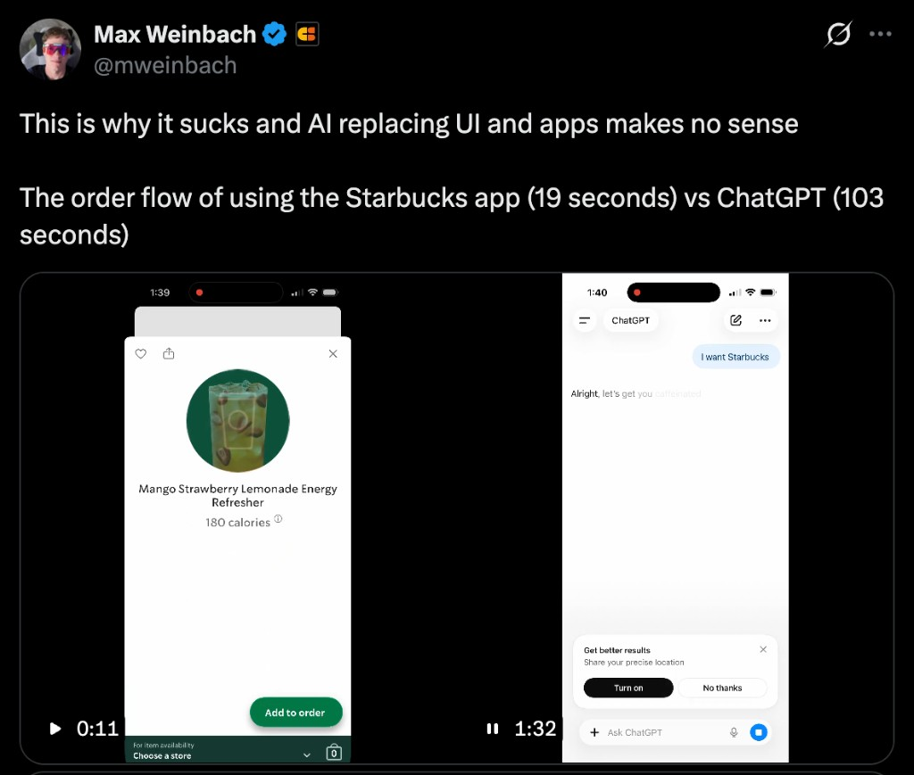
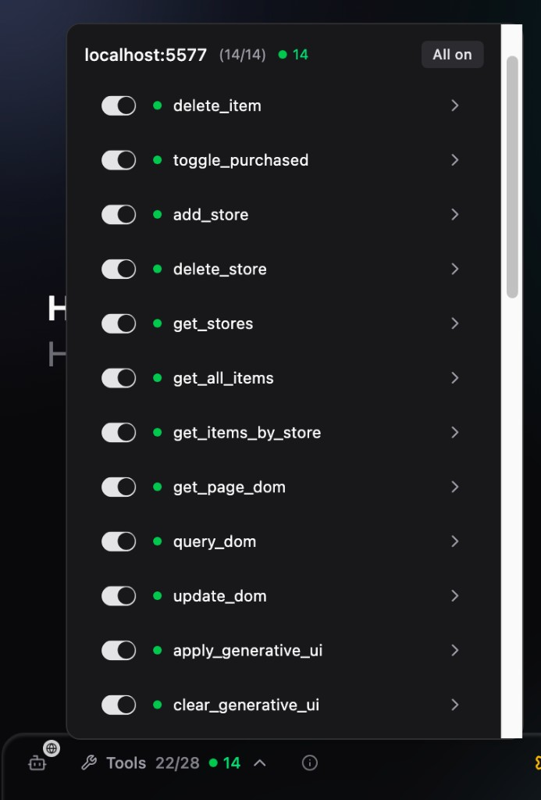

Agentic Interfaces
Tools, Skills, Generative UI and WebMCP
Wes Bos × @wesbos × wesbos.com
Tools, Skills, Generative UI and WebMCP
Wes Bos × @wesbos × wesbos.com
The way we interact with the web is certainly changing.
I switched from HandBrake to ffmpeg because typing "make this video into a 1080p mp4" is easier than a checkbox mess.


How do we as developers implement these interfaces?
get_weather({
city: "Toronto"
})resource: {
uri: "ui://weather-card",
mimeType: "text/x-react"
}<WeatherCard
data={weather}
/>You have a whole bag of possible components. You let the agent figure out which ones to use. Return a JSON spec, reconcile against components. Implement in web, native, whatever.
I need to reschedule my flight.
{
"type": "FlightCard",
"actions": ["change", "confirm"]
}Fully Generative UI. Let the AI just generate it all. Give it a place to run code.
Yes, LLMS are good at returning tool calls and JSON specs of UI, but you know what they are REALLY good at? Writing code!
Instead of only giving the agent tools, and known components, what if we also gave it a spot where it could just run any code? What if instead of just returning a JSON spec, it could just generate the code itself?

My lights should just turn on when it thinks they should.
In some cases I just want to yell at my smart speaker.

Agentic interfaces are context aware and reactive.


Now you may be looking at these examples thinking that this experience sucks
And I kinda agree..
You expose your existing website functionality using the existing semantics of the web — declarative HTML API and imperative JS API.
<form
toolname="add_item"
tooldescription="Add a grocery item to a store."
toolautosubmit=""
>
<select name="store_id"
toolparamdescription="Target store">
</select>
<input name="item_name"
toolparamdescription="Item name" required />
<button type="submit">Add</button>
</form>navigator.modelContext.registerTool(
{
name: "get_stores",
description: "List stores and item counts.",
inputSchema: { type: "object", properties: {} },
annotations: { readOnlyHint: true },
execute: () => JSON.stringify(stores, null, 2),
},
{ signal: controller.signal },
);// Get a list of tools
const tools = navigator.modelContextTesting?.listTools();
// Run a tool (usually run by an agent)
await navigator.modelContextTesting?.executeTool(
"get_stores", "{}"
);
What we do know: we don't know what the future of UI Looks like. MCP need work. WebMCP might just be part of the browser or OS?
Just like when mobile and voice hit. It's on us as developers to figure out which of these interfaces will work to provide delightful interfaces for our users.
@wesbos